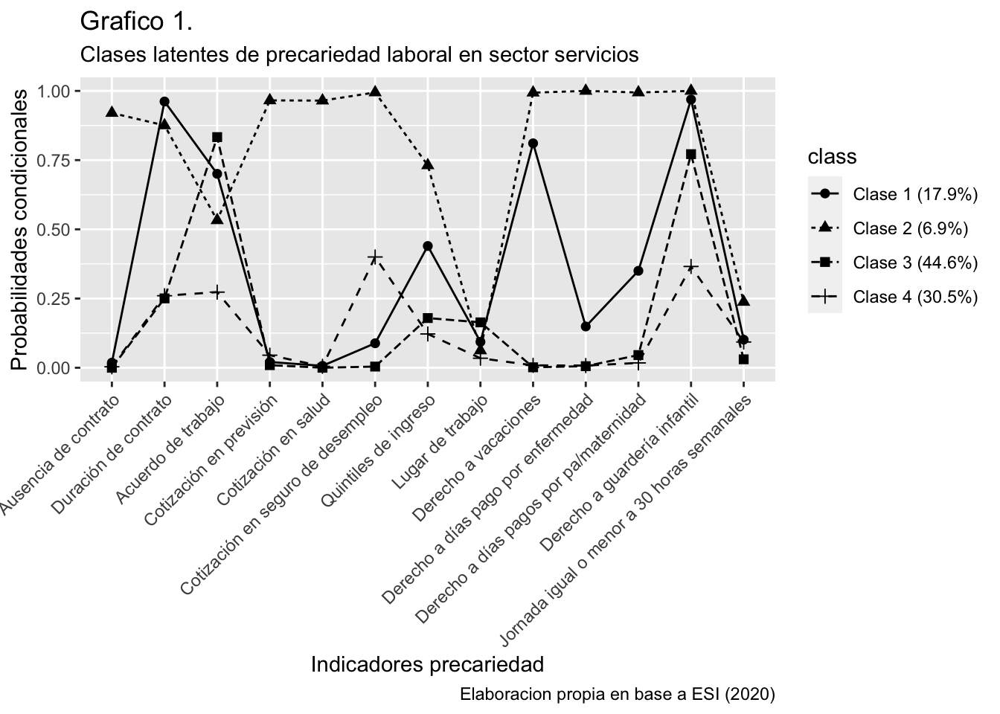

¿Cómo se distribuye la precariedad laboral en Chile? Una propuesta tipológica para analizar las condiciones de trabajo del sector servicios durante la pandemia
Emilia Barrientos, Pablo Campos, Nicolás Godoy, Monserrat Greene y Gonzalo López
2021
Resumen
Las reformas asociadas al Plan Laboral de 1979 significaron un cambio en la estructura del trabajo, derivando con frecuencia en relaciones precarias e inestables para trabajadores y trabajadoras, en ámbitos como seguridad laboral, estabilidad contractual y certidumbre. Durante el período postpinochetista, la institucionalidad laboral se ha mantenido inmutable en sus aspectos fundamentales.
Junto a esto, la aparición de la actual crisis sanitaria provocada por el COVID-19 ha sido un factor crítico en las dinámicas del mercado laboral, aumentando el riesgo de contagio y/o despido para quienes trabajan, o el deterioro en la calidad de los empleos. Dado ese contexto, se busca abordar la problemática de la precariedad laboral y la distribución de sus patrones en trabajadoras y trabajadores subcontratados en el año 2020 en Chile.
Para ello, se utilizaron los datos de la Encuesta Suplementaria de Ingresos (ESI) en su versión 2020, filtrando aquellos datos que refieren a trabajadores y trabajadoras del sector servicios (N = 3.756), para modelar un análisis de clases latentes que recogerá las multidimensionalidad de la precariedad laboral - siguiendo la operacionalización de Blanco & Julian (2019) - incluyendo (in)estabilidad, (in)seguridad, (in)suficiencia, condiciones de trabajo y cronopiedad.
A partir del análisis se seleccionó el modelo de 4 clases (clase subcontratada inestable, clase multiprecarizada, clase subcontratada protegida, clase de servicios temporales protegida). El cruce realizado según las variables sexo, edad y nivel educacional arrojó una mayor proporción de mujeres en la clase de servicios temporales protegida, mientras que en el resto se observa presencia predominantemente masculina. A su vez, en las cuatro clases el nivel escolar de mayor proporción es Educación secundaria, y mientras la clase multiprecarizada concentra sus casos en las categorías de menor nivel educacional, la clase de servicios temporales protegida posee el porcentaje más alto de Educación superior entre las clases. En cuanto a edad, todas las clases se sitúan mayoritariamente en el rango de 25 a 49 años, siendo la clase subcontratada inestable de mayor proporción de trabajadores/as jóvenes, y la clase multiprecarizada con mayor porcentaje en la categoría de 65 años o más.
Introducción
Actualmente, el mundo se ve imbricado en un proceso particular que incrementa aspectos como la inseguridad, la incertidumbre y riesgos en el área de la salud. Sin embargo, el COVID-19 no solo ha afectado la situación económica y sanitaria, sino que ha incidido fuertemente en el área laboral.
Esa incidencia no solo refiere al desempleo creciente que se ha evidenciado en Chile, señala Marchetti (2020), sino que también a los riesgos que conlleva el efectuar actividades laborales presenciales en una crisis sanitaria como ésta, perjudicando a sectores más informales del mercado laboral.
Este proceso, en palabras de Butler, ha evidenciado los límites del capitalismo y la centralidad que posee el mercado en la vida social, ante esto la autora pone énfasis en la reformulación del rol que cumple el Estado en el capitalismo actual, como plantea Boccardo (2020).
En Chile, según Pérez (2019), el mundo laboral ha sido marcado por las modernizaciones que trajo consigo la dictadura militar (1973-1990), que implicó una reestructuración económica consolidada como proyecto económico, social y cultural.
Así, la precariedad laboral se vió amplificada en un contexto en el que el Estado no es garante de derechos, dado su carácter neoliberal Lázaro Castellanos y Jubany Baucells (2017).
La flexiprecariedad como fenómeno resume la inestabilidad laboral ligada a las normativas económicas capitalistas implementadas en Chile. Es decir, corresponde a una característica central en el proceso de producción capitalista y es un mecanismo que conlleva consecuencias directas en detrimento de las personas trabajadoras del país, menciona Aguiar (2010).
Tomando en cuenta estos antecedentes, es menester considerar la calidad laboral como un fenómeno multidimensional, donde no solo las remuneraciones son decisivas, sino también las relaciones contractuales, las oportunidades de trabajo, la calidad del empleo, a partir de lo señalado por Anxo et al. (2017)
Para efectos del presente trabajo, se examinarán las condiciones de trabajo y precariedad del sector servicios. Este sector económico puede albergar las condiciones de empleo más precarizadas, debido a los patrones asociados en la fuerza de trabajo, lo que da pie a niveles o posiciones que oscilan entre la precarización y otras no precarias.
A nivel global, patrones masculinos y femeninos de participación en la fuerza de trabajo han entrado en convergencia, siendo los tipos de empleo tradicionalmente relacionados a las mujeres -de baja remuneración, inestables, inseguros, desprotegidos-, ampliados a tipos de empleo asociados a hombres -estables, sindicalizados, regulares, señala Standing (1999).
Por su parte, Antunes (2005) realiza un hincapié en el aumento considerable del trabajo femenino dentro de la clase trabajadora, especialmente en formas de trabajo “precarizado, subcontratado, tercerizado, a tiempo parcial” (p. 185) como una importante consecuencia de las transformaciones en el proceso de producción.
Por ello, se puede relacionar la composición feminizada del sector a condiciones laborales precarias; sin embargo, el presente trabajo, también incluirá hombres para evidenciar posibles diferencias en las condiciones laborales en función del sexo.
En añadidura, este sector de la economía resulta complejo de definir ya que los cambios tecnológicos de la última década han diversificado aún más las actividades de servicios, indica J. Weller (2001). Pese a esto, existe consenso en establecer que dicho sector guarda una clara heterogeneidad en su composición (Ravest, 2016; J. Weller, 2001), ya sea desde una mirada a las actividades productivas, como desde una mirada a variables más clasificatorias de la población (sexo, nivel educativo, edad). En adición, puede entenderse que “la producción terciaria es definida por residual como consistiendo en todas las demás actividades económicas, las principales de las cuales son: transporte, distribución, administración pública, servicio doméstico y todas las demás actividades cuyo producto es de una naturaleza no-material” (Guadagni, 1964, p. 187).
No obstante, @weller2001 plantea que las características propias de las actividades terciarias lo constituyen como un sector dinámico y cambiante a lo largo del tiempo. En tal sentido, el autor recomienda que la mejor manera de diferenciar dichas actividades va a depender de la interrogante que siga cada investigación. Sin embargo, de acuerdo a Schönhaut (2020), existen ciertas ocupaciones del sector servicios de carácter notablemente feminizado, tales como la educación, salud y servicios de aseo.
Al respecto, Semenza et al. (2021) sostienen que pese al incremento en la participación de las mujeres en todos los sectores de las actividades terciarias, ellas se encuentran mayoritariamente concentradas “en servicios de baja calificación o, si son altamente calificadas, se emplean principalmente en ocupaciones vinculadas a los sectores de la salud o la educación” (p. 10). Además, en dicho estudio se evidencia que las mujeres se concentran en sólo dos sectores a saber, educación, salud humana, otros servicios y administración pública, mientras que se encuentran subrepresentadas en lo que es entendido en el estudio como sector terciario avanzado. De esta manera, en la realidad chilena pueden reconocerse múltiples ocupaciones donde prima la mano de obra femenina, expuesta en mayor o menor grado a condiciones de precarización laboral.
Para sintetizar; en primer lugar, la subcontratación en el sector servicios en un contexto sanitario como el COVID- 19 constituye una temática que debe ser profundizada mediante nuevas investigaciones para ampliar el conocimiento de las dinámicas y consecuencias de la pandemia sobre la estructura del mercado laboral.
En segundo lugar, la desprotección laboral mediante mecanismos flexibilizadores puede incrementar perjuicios hacia las y los trabajadores, tanto a nivel individual (mediante factores salubres, previsionales o psicológicos) como colectivo (mediante una carencia organizativa y representativa de sus intereses), siendo relevante la tarea de poner evidencia las consecuencias de estos mecanismos precarizantes para contribuir a su erradicación.
En tercer lugar, como señala Boccardo (2020), estas dinámicas de precariedad laboral se ven incrementadas por un proceso mundial y sanitario que aumenta los riesgos laborales e incertidumbres provocadas por mecanismos flexibilizadores e individualizantes, como la subcontratación.
Finalmente, al evidenciar estos mecanismos flexibilizadores del trabajo, potenciados por el contexto sanitario, se puede contribuir al conocimiento de un sector menos estudiado, reconocer sus carencias en el ámbito laboral y, así, contribuir con un insumo para la futura generación de políticas que permitan paliar las carencias de este sector.
Pregunta y objetivos de investigación
En base a lo anterior, el presente estudio se orienta a partir de la siguiente pregunta e hipótesis:
¿Cómo se distribuyen los diferentes tipos de precariedad laboral de trabajadoras y trabajadores en el sector servicios en 2020 en Chile, según sexo, edad y nivel educacional?
Objetivo general
Determinar la distribución de los diferentes tipos de precariedad laboral de trabajadoras y trabajadores en el sector servicios en 2020 en Chile, según sexo, edad, edad y nivel educacional.
Objetivos específicos
Establecer una tipología de precariedad laboral en trabajadores y trabajadoras de servicios en 2020 en Chile.
Identificar la distribución de los tipos de precariedad laboral, según sexo.
Identificar la distribución de los tipos de precariedad laboral, según nivel educacional.
Identificar la distribución de los tipos de precariedad laboral, según edad.
Hipótesis
H1: Se espera que entre las y los trabajadores del sector servicios en Chile durante 2020, se encontrarán entre tres y cuatro clases de precariedad laboral, siendo al menos una de ellas clase protegida o en situación de menor precariedad.
H2: Se espera que las mujeres tiendan a pertenecer a las clases de precariedad laboral que tienen una mayor probabilidad de presentar inestabilidad, inseguridad e insuficiencia, en relación con los hombres.
H3: Se espera que aquellas personas con un nivel educacional de enseñanza media o inferior tiendan a pertenecer a las clases con mayores probabilidades de presentar inestabilidad, inseguridad, insuficiencia, peores condiciones de trabajo y cronopropiedad, respecto de aquellas que hayan completado la educación superior técnica y/o universitaria.
H4: Se espera que personas jóvenes recientemente integradas al mercado laboral, así como personas cercanas a la edad legal de jubilación, pertenezcan a las clases con mayor probabilidad de presentar inestabilidad, inseguridad, insuficiencia y peores condiciones de trabajo, en relación con aquellas personas cuya edad se encuentre entre los 30 y los 50 años.
Antecedentes
En primer lugar, desde los aportes de Julian (2014) la precariedad laboral se refiere a un proceso de degradación de las condiciones de trabajo que constituye uno de los elementos que consolida los procesos de dominación del capital a escala internacional. En la misma línea, la precariedad alude al fenómeno asociado a situaciones de insatisfacción, escasez y fragilidad en el trabajo.
En otros términos, la precariedad laboral se entiende como:
“(…) un conjunto de disposiciones, condiciones y situaciones en que la vida se reproduce, se adapta, persiste y resiste en la carencia, falta de certezas, y donde prevalece la exposición inducida a la inseguridad, el riesgo y la incertidumbre respecto a su propio presente/futuro.” (Blanco & Julian, 2019, p. 128).
Mora (2010) sugiere que el trabajo precario implica relaciones contractuales mediadas por la incertidumbre, remuneraciones regidas por un criterio de minimización de costos, el cumplimiento parcial o la evasión de los sistemas de derechos laborales y de seguridad social, así como la unilateralidad en la definición del tiempo trabajado en función de las necesidades productivas.En términos de Standing, citado en Julian (2020), la precarización consiste en un proceso de coacciones y coerciones sistémicas, en el que el trabajador o trabajadora convive con la inseguridad y la incertidumbre, siendo sujeto a presiones que involucran la ausencia de un sentido de logro de desarrollo personal y de una identidad segura.
Desde una aproximación multidimensional, Blanco & Julian (2019) propone que la precariedad daría cuenta de una situación fluida y múltiple de fisionomías vinculadas a las profundas transformaciones a nivel del mercado laboral, las formas de acumulación del capital y las relaciones de producción.
En la misma línea, Mora (2010) plantea que la precariedad laboral no es una condición estática, sino una situación que puede agravarse cuando las instituciones sociales y los actores laborales que debieran regular el empleo no frenan tal deterioro. Asimismo, para Julian (2014) la precarización constituye el proceso temporal que implica la profundización de una situación de “falta” inicial.
Sector servicios: una intersección de precariedad, feminización y segregación laboral
La marcada heterogeneidad interna de este sector ha dificultado una definición concreta y específica del mismo. Con el fin de establecer sus especificidades, las concepciones se volcaron a la identificación de elementos comunes entre las actividades pertenecientes a éste. Así, aparecen aspectos como “que serían intangibles, intransferibles y perecederos y no podrían almacenarse, y que además tendrían una elevada intensidad laboral debido a las limitaciones para sustituir la mano de obra por capital y tecnología” (J. Weller, 2004, p. 161).
No obstante, el factor tecnológico ha supuesto un incremento tanto en la heterogeneidad del sector servicios, como indica J. Weller (2004), así como también en la estratificación de la sociedad, dado las diferentes formas en que las personas se insertan laboralmente según Arriagada (2007).
Sin duda, este proceso de terciarización del trabajo documentado por Arriagada (2007), es escenario de procesos de inclusión y exclusión, como complementa J. Weller (2001). De acuerdo con lo planteado por el autor, los procesos de inclusión en el sector terciario se vinculan al rol cada vez más importante de estas actividades en la estructura productiva y social; mientras que los procesos de exclusión se vinculan con la generación de trabajos mal remunerados, de baja productividad y mala calidad.
Esto último refiere, en los términos de J. Weller (2001), a las barreras de ciertas actividades del sector servicios en las que los requisitos de capital, tecnología y capital humano son prácticamente nulos, lo que da pie a una inserción o “refugio” de la fuerza laboral que no encuentra posibilidades de inserción en actividades que supongan mayor productividad y sean mejor pagadas.
Metodología
Datos
La presente investigación se realizó con datos de la Encuesta Suplementaria de Ingresos (ESI) en su versión 2020.
Una vez filtrados todos aquellos casos en que la actividad económica de la empresa en que trabajan no perteneciese al sector de servicios (es decir, todos aquellos sujetos cuyos valores en la variable b13_rev4cl_caenes fuesen diferentes a 1 (Agricultura, ganadería, silvicultura y pesca), 2 (Explotación de minas y canteras), 3 (Industrias manufactureras) y 6 (Construcción)), los datos redujeron su cantidad de observaciones (n) de 71.935 a 3.756.
ESI, elaborada por el Instituto Nacional de Estadísticas (INE) (2021) tiene por objeto caracterizar los ingresos laborales en el mes de referencia de las personas que son clasificadas como ocupadas en la Encuesta Nacional de Empleo (ENE), y caracterizar los ingresos de otras fuentes de los hogares en el mes de referencia. Siguiendo el diseño muestral de ENE, también producida por el INE (2020), la ESI presenta una estrategia de muestreo probabilística, estratificada y bietápica, en que los estratos de muestro corresponden a la combinación Estrato geográfico – Estrato socioeconómico, en caso de que tal combinación pueda existir en cada estrato en particular.
Así, la ESI busca ser representativa de la completitud del territorio chileno, abarcando el 97% de las comunas del país, con errores de muestreo aceptables para los dominios nacional, nacional urbano, nacional rural, regional, área urbana de todas las regiones, y área rural de las regiones de O’Higgins, El Maule, La Araucanía, Los Lagos, Metropolitana, Los Ríos y Ñuble. Las variables seleccionadas para el análisis corresponden a las presentadas en la operacionalización multidimensional de la precariedad laboral elaborada por Blanco y Julian (2019), que incluye cinco componentes que incorporan las siguientes variables:
- (In)estabilidad: ausencia de contrato, existencia de contratos temporales, de corta duración o de incierta finalización + contrato (originalmente b8): En ese empleo ¿tiene contrato escrito?
- contrato_duracion (originalmente b9): ¿La duración de ese contrato o acuerdo de trabajo es…
- contrato_sub (originalmente b12): ¿Está contratado o tiene un acuerdo de trabajo…
- (In)seguridad: ausencia (o no) de cobertura de salud y previsión social.
- cotiza_prev (originalmente b7a_1): Su empleador, ¿cotiza por usted en el sistema previsional o de pensión?
- cotiza_salud (originalmente b7a_2): Su empleador, ¿cotiza por usted en el sistema de salud público o privado?
- cotiza_seguro (originalmente b7a_3): Su empleador, ¿cotiza por usted en el sistema de seguro de desempleo?
- (In)suficiencia: cantidad de salario/ingreso.
- ingresos (originalmente ing_t_p): Recodificación de variable ingresos a categórica, a partir de quintiles de ingreso.
- Condiciones de trabajo: refiere a la “(…) accidentabilidad porocupación y la caracterización de los lugares de trabajo” (Blanco y Julián, 2019, p. 104).
- lugar_trab (originalmente b16): En la semana que terminó el domingo pasado, ¿dónde realizó principalmente sus tareas?
- cond_vacaciones (originalmente b7b_1): En este trabajo, ¿tiene derecho, aunque no utilice, a vacaciones anuales?
- cond_enfermedad (originalmente b7b__2): En este trabajo, ¿tiene derecho, aunque no utilice, a días pagados por enfermedad?
- cond_maternidad (originalmente b7b_3): En este trabajo, ¿tiene derecho, aunque no utilice, a permiso por maternidad y paternidad?
- cond_guarderia (originalmente b7b_4): En este trabajo, ¿tiene derecho, aunque no utilice, a servicio de guardería infantil?
- Cronopiedad: cantidad de horas de trabajo realizadas semanalmente.
- horas (originalmente c2_1_3): Actividad principal: Total horas semanales trabajadas habitualmente, recodificada en categorías.
Se incorporan además variables demográficas: - sexo: sexo de la persona que responde el cuestionario. - edad: edad de la persona que responde el cuestionario, recodificada en tramos. - educacion (originalmente cine): Clasificación Internacional de nivel Educacional (CINE).
Todo lo anterior se sintetiza en tabla 1:
Tabla 1. Descripción de variables por analizar
print(summarytools::dfSummary(base_proc, headings=FALSE, plain.ascii = FALSE), method = 'render')| No | Variable | Label | Stats / Values | Freqs (% of Valid) | Graph | Valid | Missing | ||||||||||||||||||||||||||||||||||||||||
|---|---|---|---|---|---|---|---|---|---|---|---|---|---|---|---|---|---|---|---|---|---|---|---|---|---|---|---|---|---|---|---|---|---|---|---|---|---|---|---|---|---|---|---|---|---|---|---|
| 1 | contrato [factor] | Existencia de contrato |
|
|
 |
2531 (100.0%) | 0 (0.0%) | ||||||||||||||||||||||||||||||||||||||||
| 2 | contrato_duracion [factor] | Duracion de contrato |
|
|
 |
2531 (100.0%) | 0 (0.0%) | ||||||||||||||||||||||||||||||||||||||||
| 3 | contrato_sub [factor] | Acuerdo de trabajo |
|
|
 |
2531 (100.0%) | 0 (0.0%) | ||||||||||||||||||||||||||||||||||||||||
| 4 | cotiza_prev [factor] | Cotizacion en prevision |
|
|
 |
2531 (100.0%) | 0 (0.0%) | ||||||||||||||||||||||||||||||||||||||||
| 5 | cotiza_salud [factor] | Cotizacion en salud |
|
|
|
2531 (100.0%) | 0 (0.0%) | ||||||||||||||||||||||||||||||||||||||||
| 6 | cotiza_seguro [factor] | Cotizacion en seguro de desempleo |
|
|
 |
2531 (100.0%) | 0 (0.0%) | ||||||||||||||||||||||||||||||||||||||||
| 7 | ingresos [factor] | Quintiles de ingreso |
|
|
 |
2531 (100.0%) | 0 (0.0%) | ||||||||||||||||||||||||||||||||||||||||
| 8 | lugar_trab [factor] | Lugar de trabajo |
|
|
 |
2531 (100.0%) | 0 (0.0%) | ||||||||||||||||||||||||||||||||||||||||
| 9 | cond_vacaciones [factor] | Derecho a vacaciones |
|
|
 |
2531 (100.0%) | 0 (0.0%) | ||||||||||||||||||||||||||||||||||||||||
| 10 | cond_enfermedad [factor] | Derecho a dias pagos por enfermedad |
|
|
 |
2531 (100.0%) | 0 (0.0%) | ||||||||||||||||||||||||||||||||||||||||
| 11 | cond_maternidad [factor] | Derecho a dias pagos por pa/maternidad |
|
|
 |
2531 (100.0%) | 0 (0.0%) | ||||||||||||||||||||||||||||||||||||||||
| 12 | cond_guarderia [factor] | Derecho a guarderia infantil |
|
|
 |
2531 (100.0%) | 0 (0.0%) | ||||||||||||||||||||||||||||||||||||||||
| 13 | horas [factor] | Total horas semanales habituales en actividad principal |
|
|
 |
2531 (100.0%) | 0 (0.0%) | ||||||||||||||||||||||||||||||||||||||||
| 14 | sexo [factor] | Sexo |
|
|
 |
2531 (100.0%) | 0 (0.0%) | ||||||||||||||||||||||||||||||||||||||||
| 15 | educacion [factor] | Educacion |
|
|
 |
2531 (100.0%) | 0 (0.0%) | ||||||||||||||||||||||||||||||||||||||||
| 16 | edad [character] | Edad |
|
|
 |
2531 (100.0%) | 0 (0.0%) |
Generated by summarytools 1.0.0 (R version 4.1.2)
2021-12-02
Análisis
Para cumplir con los objetivos de esta investigación se llevará a cabo un análisis de clases latentes que conduzca a la elaboración de una tipología sobre la variable latente precariedad laboral. El análisis de clases latentes refiere a una técnica estadística para la identificación de subgrupos diferentes a partir de datos observados, bajo el supuesto de que la membresía a estas clases puede explicarse según los patrones de respuesta, en razón de lo señalado por B. E. Weller et al. (2020).
Para ello, se trabajará con el paquete Polytomous variable Latent Class Analysis o poLCA elaborado por Linzer & Lewis (2011). Los análisis propuestos serán ralizados con el softare estadístico R en su versión 4.1.0 “Camp Pontanezen.”
En aras de encontrar el modelo más parsimonioso, con la menor cantidad de clases y que tenga un ajuste aceptable, se considerará el chi-cuadrado de Pearson (X^2), chi-cuadrado de razón de verosimilitud (G2), Log-likelihood, criterio de información de Akaike (AIC) y criterio de información bayesiano (BIC), según lo propuesto por Hagenaars & McCutcheon (2002).
Luego, a partir de la tipología construida, se efectuará un análisis descriptivo bivariado que cruce las clases de precariedad con las variables demográficas sexo, edad y educacion, a modo de poder dar cuenta de la distribución de la precariedad según tales indicadores.
Definición del modelo de clases latentes a utilizar
Una vez construidos los modelos con 1 a 12 clases, se compararon las medidas de ajuste mencionadas en el apartado de metodología para cada uno de ellos. En base a ello, y considerando las medidas más adecuadas para el modelo más parsimonioso (es decir, con el mejor ajuste para la menor cantidad de clases posible), se optó por trabajar con el modelo de 4 clases.
Sus medidas de ajuste son: a) AIC = 31.287,84; b) BIC = 317.748,91; c) Log-likelihood = -15.564,92; d) Chi^2 = 223.813,74; y e) G2 = 3.087,19. La comparativa con el resto de modelos elaborados se presenta en la tabla 2.
f<-cbind(contrato,
contrato_duracion,
contrato_sub,
cotiza_prev,
cotiza_salud,
cotiza_seguro,
ingresos,
lugar_trab,
cond_vacaciones,
cond_enfermedad,
cond_maternidad,
cond_guarderia,
horas) ~ 1 # model## Estadísticos de ajuste
AIC.1 <-as.numeric(lc1$aic)
AIC.2 <-as.numeric(lc2$aic)
AIC.3 <-as.numeric(lc3$aic)
AIC.4 <-as.numeric(lc4$aic)
AIC.5 <-as.numeric(lc5$aic)
AIC.6 <-as.numeric(lc6$aic)
AIC.7 <-as.numeric(lc7$aic)
AIC.8 <-as.numeric(lc8$aic)
AIC.9 <-as.numeric(lc9$aic)
AIC.10 <-as.numeric(lc10$aic)
AIC.11 <-as.numeric(lc11$aic)
AIC.12 <-as.numeric(lc12$aic)
BIC.1 <-as.numeric(lc1$bic)
BIC.2 <-as.numeric(lc2$bic)
BIC.3 <-as.numeric(lc3$bic)
BIC.4 <-as.numeric(lc4$bic)
BIC.5 <-as.numeric(lc5$bic)
BIC.6 <-as.numeric(lc6$bic)
BIC.7 <-as.numeric(lc7$bic)
BIC.8 <-as.numeric(lc8$bic)
BIC.9 <-as.numeric(lc9$bic)
BIC.10 <-as.numeric(lc10$bic)
BIC.11 <-as.numeric(lc11$bic)
BIC.12 <-as.numeric(lc12$bic)
llik.1 <-as.numeric(lc1$llik)
llik.2 <-as.numeric(lc2$llik)
llik.3 <-as.numeric(lc3$llik)
llik.4 <-as.numeric(lc4$llik)
llik.5 <-as.numeric(lc5$llik)
llik.6 <-as.numeric(lc6$llik)
llik.7 <-as.numeric(lc7$llik)
llik.8 <-as.numeric(lc8$llik)
llik.9 <-as.numeric(lc9$llik)
llik.10 <-as.numeric(lc10$llik)
llik.11 <-as.numeric(lc11$llik)
llik.12 <-as.numeric(lc12$llik)
chisq.1 <- as.numeric(lc2$Chisq)
chisq.2 <- as.numeric(lc2$Chisq)
chisq.3 <- as.numeric(lc3$Chisq)
chisq.4 <- as.numeric(lc4$Chisq)
chisq.5 <- as.numeric(lc5$Chisq)
chisq.6 <- as.numeric(lc6$Chisq)
chisq.7 <- as.numeric(lc7$Chisq)
chisq.8 <- as.numeric(lc8$Chisq)
chisq.9 <- as.numeric(lc9$Chisq)
chisq.10 <- as.numeric(lc10$Chisq)
chisq.11 <- as.numeric(lc11$Chisq)
chisq.12 <- as.numeric(lc12$Chisq)
G.1 <- as.numeric(lc1$Gsq)
G.2 <- as.numeric(lc2$Gsq)
G.3 <- as.numeric(lc3$Gsq)
G.4 <- as.numeric(lc4$Gsq)
G.5 <- as.numeric(lc5$Gsq)
G.6 <- as.numeric(lc6$Gsq)
G.7 <- as.numeric(lc7$Gsq)
G.8 <- as.numeric(lc8$Gsq)
G.9 <- as.numeric(lc9$Gsq)
G.10 <- as.numeric(lc10$Gsq)
G.11 <- as.numeric(lc11$Gsq)
G.12 <- as.numeric(lc12$Gsq)
n.obs1 <- as.numeric(lc1$Nobs)
n.obs2 <- as.numeric(lc2$Nobs)
n.obs3 <- as.numeric(lc3$Nobs)
n.obs4 <- as.numeric(lc4$Nobs)
n.obs5 <- as.numeric(lc5$Nobs)
n.obs6 <- as.numeric(lc6$Nobs)
n.obs7 <- as.numeric(lc7$Nobs)
n.obs8 <- as.numeric(lc8$Nobs)
n.obs9 <- as.numeric(lc9$Nobs)
n.obs10 <- as.numeric(lc10$Nobs)
n.obs11 <- as.numeric(lc11$Nobs)
n.obs12 <- as.numeric(lc12$Nobs)
#Creación de Vectores para TABLA DE COMPARACIÓN
AIC <- c(AIC.1, AIC.2,AIC.3,AIC.4,AIC.5, AIC.6, AIC.7, AIC.8, AIC.9, AIC.10, AIC.11, AIC.12)
BIC <- c(BIC.1, BIC.2,BIC.3,BIC.4,BIC.5, BIC.6, BIC.7, BIC.8, BIC.9, BIC.10, BIC.11, BIC.12)
llik <- c(llik.1, llik.2,llik.3,llik.4,llik.5, llik.6, llik.7, llik.8, llik.9, llik.10, llik.11, llik.12)
chi.cuadrado <- c(chisq.1, chisq.2,chisq.3,chisq.4,chisq.5, chisq.6, chisq.7, chisq.8, chisq.9, chisq.10, chisq.11, chisq.12)
G2 <- c(G.1, G.2,G.3,G.4,G.5, G.6, G.7, G.8, G.9, G.10, G.11, G.12)
N <- c(n.obs1, n.obs2,n.obs3,n.obs4,n.obs5, n.obs6, n.obs7, n.obs8, n.obs9, n.obs10, n.obs11, n.obs12)
Modelos <- c("1 clase","2 clases", "3 clases", "4 clases", "5 clases", "6 clases", "7 clases", "8 clases", "9 clases", "10 clases", "11 clases", "12 clases")
#CREACIÓN TABLA ESTADÍSTICOS DE AJUSTE MODELOS TODAS LAS VARIABLES
fit.indices <- data.frame(Modelos,AIC,BIC,llik,chi.cuadrado,G2,N)
sjPlot::tab_df(fit.indices,
title = "Tabla 2.
Medidas de ajuste para modelos de clases latentes",
footnote = "Elaboracion propia en base a ESI (2020)",
col.header = c("Modelos", "AIC", "BIC", "Log-likelihood", "Chi^2", "G2", "N"),
show.footnote = T)| Modelos | AIC | BIC | Log-likelihood | Chi^2 | G2 | N | |
|---|---|---|---|---|---|---|---|
| 1 clase | 39256.12 | 39367.01 | -19609.06 | 274796.52 | 11175.47 | 2531 | |
| 2 clases | 33620.56 | 33848.18 | -16771.28 | 274796.52 | 5499.91 | 2531 | |
| 3 clases | 31889.88 | 32234.22 | -15885.94 | 185154.38 | 3729.22 | 2531 | |
| 4 clases | 31287.84 | 31748.91 | -15564.92 | 223813.74 | 3087.19 | 2531 | |
| 5 clases | 31072.33 | 31650.13 | -15437.16 | 213431.13 | 2831.67 | 2531 | |
| 6 clases | 30907.97 | 31602.50 | -15334.98 | 302025.51 | 2627.31 | 2531 | |
| 7 clases | 30762.57 | 31573.82 | -15242.28 | 69313.61 | 2441.91 | 2531 | |
| 8 clases | 30649.46 | 31577.45 | -15165.73 | 48666.09 | 2288.81 | 2531 | |
| 9 clases | 30568.51 | 31613.22 | -15105.26 | 65604.74 | 2167.86 | 2531 | |
| 10 clases | 30515.05 | 31676.48 | -15058.52 | 40641.07 | 2074.39 | 2531 | |
| 11 clases | 30479.78 | 31757.94 | -15020.89 | 55218.82 | 1999.12 | 2531 | |
| 12 clases | 30423.32 | 31818.21 | -14972.66 | 44613.99 | 1902.66 | 2531 | |
| Elaboracion propia en base a ESI (2020) | |||||||
lcmodel <- reshape2::melt(lc4$probs, level=2)
modelo <- lcmodel %>%
pivot_wider(names_from = "Var1",
values_from = "value") %>%
select(Variable = L2, Categoria = Var2, clase1 = "class 1: ", clase2 = "class 2: ", clase3 = "class 3: ", clase4 = "class 4: ") %>%
mutate(Variable = car::recode(.$Variable, recodes = c("'contrato' = 'Contrato';
'contrato_duracion' = 'Duracion de contrato';
'contrato_sub' = 'Subcontrato';
'horas' = 'Horas';
'ingresos' = 'Quintil de ingresos';
'lugar_trab' = 'Lugar de trabajo';
'cotiza_prev' = 'Cotizacion previsional';
'cotiza_salud' = 'Cotizacion de salud';
'cotiza_seguro' = 'Cotizacion seguro de desempleo';
'cond_enfermedad' = 'Dias pagos por enfermedad';
'cond_guarderia' = 'Derecho a guarderia';
'cond_maternidad' = 'Dias pagos por maternidad';
'cond_vacaciones' = 'Vacaciones pagadas'"), as.factor = T),
Categoria = case_when(Variable == 'Contrato' & Categoria == 'Pr(1)' ~ 'No',
Variable == 'Contrato' & Categoria == 'Pr(2)' ~ 'Si',
Variable == 'Horas' & Categoria == 'Pr(1)' ~ 'Entre 31 y 45 horas semanales',
Variable == 'Horas' & Categoria == 'Pr(2)' ~ 'Igual o menor a 30 horas semanales',
Variable == 'Horas' & Categoria == 'Pr(3)' ~ 'Mayor a 45 horas semanales',
Variable == 'Lugar de trabajo' & Categoria =='Pr(1)' ~ 'En instalaciones u oficinas propias o arrendadas, en hogar propio o anexos',
Variable == 'Lugar de trabajo' & Categoria == 'Pr(2)' ~ 'En instalaciones, oficina o casa del cliente o empleador',
Variable == 'Lugar de trabajo' & Categoria == 'Pr(3)' ~ 'En la calle o via publica, u otro',
Variable == 'Lugar de trabajo' & Categoria == 'Pr(4)' ~ 'En obras de construccion, mineras, predio agricola o similares',
Variable == 'Quintil de ingresos' & Categoria == 'Pr(1)' ~ '$0 a $291.974',
Variable == 'Quintil de ingresos' & Categoria == 'Pr(2)' ~ '$291.975 a $380.500',
Variable == 'Quintil de ingresos' & Categoria == 'Pr(3)' ~ '$380.501 a $500.000',
Variable == 'Quintil de ingresos' & Categoria == 'Pr(4)' ~ '$500.001 a $779.787',
Variable == 'Subcontrato' & Categoria == 'Pr(1)' ~ 'Con un contratista o subcontratista de bienes y servicios',
Variable == 'Subcontrato' & Categoria == 'Pr(2)' ~ 'Con un enganchador (contratista agricola)',
Variable == 'Subcontrato' & Categoria == 'Pr(3)' ~ 'Con una empresa de servicios temporales o suministradora de trabajadores',
Variable == 'Cotizacion de salud' & Categoria == 'Pr(1)' ~ 'No',
Variable == 'Cotizacion de salud' & Categoria == 'Pr(2)' ~ 'Si',
Variable == 'Cotizacion previsional' & Categoria == 'Pr(1)' ~ 'No',
Variable == 'Cotizacion previsional' & Categoria == 'Pr(2)' ~ 'Si',
Variable == 'Cotizacion seguro de desempleo' & Categoria == 'Pr(1)' ~ 'No',
Variable == 'Cotizacion seguro de desempleo' & Categoria == 'Pr(2)' ~ 'Si',
Variable == 'Derecho a guarderia'& Categoria == 'Pr(1)' ~'No',
Variable == 'Derecho a guarderia'& Categoria == 'Pr(2)' ~ 'Si',
Variable == 'Dias pagos por enfermedad' & Categoria == 'Pr(1)' ~ 'No',
Variable == 'Dias pagos por enfermedad' & Categoria == 'Pr(2)' ~ 'Si',
Variable == 'Vacaciones pagadas'& Categoria == 'Pr(1)' ~ 'No',
Variable == 'Vacaciones pagadas'& Categoria == 'Pr(2)' ~ 'Si',
Variable == 'Dias pagos por maternidad'& Categoria == 'Pr(1)' ~ 'No',
Variable == 'Dias pagos por maternidad'& Categoria == 'Pr(2)' ~ 'Si',
Variable == 'Duracion de contrato'& Categoria == 'Pr(1)' ~ 'Definido',
Variable == 'Duracion de contrato'& Categoria == 'Pr(2)' ~ 'Indefinido',
TRUE ~ NA_character_),
clase1 = (round(.$clase1, digits = 3))*100,
clase2 = (round(.$clase2, digits = 3))*100,
clase3 = (round(.$clase3, digits = 3))*100,
clase4 = (round(.$clase4, digits = 3))*100)
sjPlot::tab_df(modelo,
title = 'Tabla 3.
Modelo de clases latentes de precariedad laboral',
footnote = 'Elaboracion propia en base a ESI (2020)',
show.footnote = T)| Variable | Categoria | clase1 | clase2 | clase3 | clase4 | |
|---|---|---|---|---|---|---|
| Contrato | No | 1.80 | 92.00 | 0.00 | 0.30 | |
| Contrato | Si | 98.20 | 8.00 | 100.00 | 99.70 | |
| Duracion de contrato | Definido | 96.20 | 87.50 | 25.10 | 26.00 | |
| Duracion de contrato | Indefinido | 3.80 | 12.50 | 74.90 | 74.00 | |
| Subcontrato | Con un contratista o subcontratista de bienes y servicios | 70.00 | 53.30 | 83.30 | 27.30 | |
| Subcontrato | Con un enganchador (contratista agricola) | 7.50 | 33.50 | 0.10 | 0.00 | |
| Subcontrato | Con una empresa de servicios temporales o suministradora de trabajadores | 22.40 | 13.20 | 16.60 | 72.70 | |
| Cotizacion previsional | No | 2.10 | 96.60 | 0.90 | 4.50 | |
| Cotizacion previsional | Si | 97.90 | 3.40 | 99.10 | 95.50 | |
| Cotizacion de salud | No | 0.70 | 96.50 | 0.00 | 0.50 | |
| Cotizacion de salud | Si | 99.30 | 3.50 | 100.00 | 99.50 | |
| Cotizacion seguro de desempleo | No | 8.80 | 99.40 | 0.40 | 40.00 | |
| Cotizacion seguro de desempleo | Si | 91.20 | 0.60 | 99.60 | 60.00 | |
| Quintil de ingresos | $0 a $291.974 | 44.00 | 73.10 | 17.90 | 12.20 | |
| Quintil de ingresos | $291.975 a $380.500 | 24.90 | 13.60 | 26.00 | 25.30 | |
| Quintil de ingresos | $380.501 a $500.000 | 18.50 | 10.50 | 29.90 | 29.90 | |
| Quintil de ingresos | $500.001 a $779.787 | 12.70 | 2.80 | 26.20 | 32.60 | |
| Lugar de trabajo | En instalaciones u oficinas propias o arrendadas, en hogar propio o anexos | 1.30 | 1.10 | 2.30 | 20.50 | |
| Lugar de trabajo | En instalaciones, oficina o casa del cliente o empleador | 45.50 | 28.00 | 58.00 | 76.10 | |
| Lugar de trabajo | En la calle o via publica, u otro | 9.30 | 6.20 | 16.40 | 3.40 | |
| Lugar de trabajo | En obras de construccion, mineras, predio agricola o similares | 43.90 | 64.60 | 23.30 | 0.00 | |
| Vacaciones pagadas | No | 81.10 | 99.40 | 0.20 | 0.90 | |
| Vacaciones pagadas | Si | 18.90 | 0.60 | 99.80 | 99.10 | |
| Dias pagos por enfermedad | No | 14.90 | 100.00 | 0.60 | 0.80 | |
| Dias pagos por enfermedad | Si | 85.10 | 0.00 | 99.40 | 99.20 | |
| Dias pagos por maternidad | No | 35.00 | 99.40 | 4.60 | 1.70 | |
| Dias pagos por maternidad | Si | 65.00 | 0.60 | 95.40 | 98.30 | |
| Derecho a guarderia | No | 96.90 | 100.00 | 77.20 | 36.60 | |
| Derecho a guarderia | Si | 3.10 | 0.00 | 22.80 | 63.40 | |
| Horas | Entre 31 y 45 horas semanales | 78.20 | 66.90 | 84.40 | 83.30 | |
| Horas | Igual o menor a 30 horas semanales | 10.10 | 23.80 | 3.00 | 9.30 | |
| Horas | Mayor a 45 horas semanales | 11.70 | 9.30 | 12.50 | 7.40 | |
| Elaboracion propia en base a ESI (2020) | ||||||
La primera clase identificada, correspondiente al 17,9 % de la población en estudio, presenta un 98,2 % de probabilidad de existencia de contratos. Respecto a la duración de éstos, en la Tabla 3 se presenta una alta probabilidad de esta clase (96,2 %) de poseer contratos definidos. En relación con el personal que presenta subcontrato en esta clase, existe una probabilidad del 70 % que este tipo de vínculo laboral se mantenga con un contratista o subcontratista de bienes y servicios.
Al mismo tiempo, se indica con una probabilidad del 22,4 % que esta relación sea con una empresa de servicios temporales o suministradora de trabajadores, mientras que se muestra una probabilidad del 7,5 % que este vínculo sea a través de un enganchador (contratista agrícola). Sobre la cotización previsional, se estima con un 97,9 % de probabilidades que esta clase cuenten con dicha cotización. Lo mismo sucede con las cotizaciones de salud y de seguro de desempleo, con unas probabilidades de presentarlas de 99,3 % y 91,2 % respectivamente.
En cuanto a los quintiles de ingresos, en la Tabla 3 se indican un 44 % de probabilidades que esta clase pertenezca al primer quintil de ingresos ($0 a $291.974), asimismo, se estiman un 24,9 % de probabilidades de pertenecer al segundo quintil de ingresos ($291.975 a $380.500). En cuanto a la probabilidad de pertenecer tanto al tercer como al cuarto quintil de ingresos, se muestran unas probabilidades menores al 20 % (18,5 % y 12, 7 % respectivamente).
Respecto al lugar de trabajo, se estima un 45,5 % de probabilidades que les trabajadores de esta clase realicen sus actividades en instalaciones, oficinas o casa del cliente o empleador. En relación a lo anterior, existe un 43,9 % de probabilidades que el lugar de trabajo de esta clase corresponda a obras de construcción, mineras, predios agrícolas o similares. En cuanto a quienes desarrollan sus actividades en la calle, vía pública u otro, esta clase presenta un 9,3 % de probabilidades, al mismo tiempo que presenta un 1,3 % de realizar sus funciones en instalaciones u oficinas propias o arrendadas, en hogar propio o anexos.Concerniente al pago de vacaciones, la clase en cuestión presenta un 81,1 % de probabilidades que estas no sean pagadas. Sin embargo, al tratarse de los días pagos por enfermedad existe un 85,1 % que estos sean pagados. En cuanto a los días por maternidad, se estima un 65 % de probabilidad que estos resulten efectivamente pagados, mientras que para la clase se muestra una probabilidad de 96,9 % que no cuenten con derecho a guardería.Por último, sobre el total de horas semanales habituales en la actividad principal, en la Tabla 3 se indica un 78,2 % de probabilidades que quienes pertenezcan a esta clase trabajen entre 31 y 45 horas semanales.
Al mismo tiempo, existe una probabilidad de 11,7 % que las personas de esta clase trabajen una cantidad mayor a 45 horas semanales, mientras que se estima con un 10,1% de probabilidades que este grupo trabaje una cantidad igual o menor a 30 horas semanales. Por lo tanto, se propone nombrarla clase subcontratada inestable.
Por su parte, la Clase 2 contempla un 6,9% de la población estudiada, y es caracterizada por una amplia probabilidad de no poseer contrato (92%), y en caso de poseer, que éste sea indefinido (87,5%). Luego, se estima en el modelo un 53% de probabilidad de esta clase de emplearse con un contratista o subcontratista de bienes y servicios, 33% con un enganchador (contratista agrícola), y un 13% de probabilidades de ser contratado por una empresa de servicios temporales o suministradora de trabajadores.
En lo que respecta a seguridad laboral, se estima una probabilidad de 96% de carecer de cotización previsional, un 96,5% de no poseer cotización en servicios de salud, y un 99,4% de no contar con cotizaciones en seguro de desempleo.
Sumado a ello, la probabilidad según quintiles de ingreso se ordena de modo decreciente, siendo el primer quintil el de mayor proporción (73,10%), luego el segundo (13,6%), siguiéndole el tercero (10,5%), y finalmente el cuarto quintil (2,8%).
En cuanto a lugar de trabajo, esta clase se caracteriza por una probabilidad de 64,6% de trabajar en obras de construcción, mineras, predio agrícola o similares. Se estima a la vez un 99,4% de probabilidades de no obtener vacaciones pagadas, un 100% de probabilidad de no recibir pago por días de enfermedad, un 99,4% de probabilidad de no ser remunerado/a en días de ausencia por maternidad, y un 100% de probabilidad de no poseer derecho a guardería.
Finalmente, se aprecia una mayor probabilidad de esta clase a poseer jornadas laborales de entre 31 a 45 horas semanales (66,9%), y a la vez, ser la clase con la mayor probabilidad de trabajar bajo horarios de 30 horas semanales o menos (23,8%). Por ello, esta se denominará clase multiprecarizada.
Por otra parte, la tercera clase identificada corresponde a un 44% de los trabajadores del sector servicios. Esta se caracteriza por contar con un contrato, siendo altamente probable de que este sea de carácter indefinido (74,9%) y con un contratista o subcontratista de bienes y servicios (83,3%); lo que, aludiendo a la primera dimensión de la operacionalización, suponiendo una combinación de rasgos de estabilidad e inestabilidad.
Respecto al segundo componente de la precariedad laboral, es altamente probable que los individuos de la clase en cuestión cuenten con cotización previsional (99.1%), de salud (100%) y de seguro de desempleo (100%); dando cuenta de rasgos de seguridad.
En relación a los ingresos, el modelo de clases latentes indica que es probable que los trabajadores de esta clase tengan ingresos distribuidos entre los distintos quintiles, aunque es menos probable que se trate del primer quintil (17,9%).
En cuanto a las condiciones de trabajo, es probable que la tercera clase trabaje en instalaciones del cliente o empleador (58,0%) y, en menor medida, en obras de construcción, mineras, predio agrícola o similares (23,3%). En esta misma línea, el modelo de clases latentes indica que es altamente probable que tales trabajadores cuenten con vacaciones pagadas (99,8%), tengan derecho a días pagados por enfermedad (99,4%) y días pagados por maternidad, aunque es poco probable que tengan derecho a guardería (22,8%).
Adicionalmente, esta clase contempla altas probabilidades de trabajar entre 31 y 45 horas semanales (84,4%). En virtud de lo anterior, esta se denominará clase subcontratada protegida.
Finalmente, la Clase 4 , la cual corresponde a un 30% del total, presenta existencia de contratos, con una probabilidad del 99,7%. Respecto a la duración del contrato, con una probabilidad del 74%, la Clase 4 es propensa a los contratos indefinidos. Respecto de con quién se establece el subcontrato, hay un 72,7% de probabilidad de hacerlo con una empresa de servicios temporales o suministradora de trabajadores y un 27,3% de realizarlo con un contratista o subcontratista de bienes y servicios, presentando una ausencia de casos en el subcontrato con un enganchador (contratista agrícola).
Ahora bien, respecto a las diferentes cotizaciones, la clase 4 tiene altas probabilidades de contar con cotizaciones previsionales y de salud, con un 95,5 % y 99,5 % respectivamente. No obstante, referido a cotización por seguro de desempleo, la probabilidad es de un 60%. En cuanto a los ingresos, existe 32,6 % de probabilidad de pertenecer al cuarto quintil ($500.001 a $779.787), un 12,2% de probabilidad de pertenecer al quintil más bajo ($0 a $291.974) y un 25,3% y 29,9% de pertenecer al segundo y tercer quintil respectivamente.
En lo que concierne al lugar de trabajo, la clase 4 tiene una probabilidad de un 76,1% de trabajar en instalaciones, oficina o casa del cliente o empleador, por otro lado, tiene un 20,5% de probabilidad de trabajar en instalaciones u oficinas propias o arrendadas, en hogar propio o anexos. Respecto a diferentes derechos laborales, la clase 4 tiene una probabilidad de 99,1% de tener vacaciones pagadas, asimismo la probabilidad de tener días pagos por enfermedad y maternidad corresponde a un 99,2% y un 98,3% respectivamente. En cambio, derecho a guardería, la probabilidad baja a un 63,4%.
Para finalizar, correspondiente a las horas de trabajo, la Clase 4 tiene un 83,3% de probabilidad de tener horas de trabajo entre 31 y 45 horas semanales. Por ende, se denominará a este conjunto clase de servicios temporales protegida.
lca4_probs=as.data.frame(lc4$probs)
datlca_tot_par=lca4_probs[c(1,3,5,8,10,12,14,20,22,24,26,28,31)] #dejar la categoria mas precaria
datlca_tot_par$class=c(1:4) #añadir número de clase
datlca_tot_parl=melt(datlca_tot_par, id=c("class") )
# Relabel factors
datlca_tot_parl$variable=factor(datlca_tot_parl$variable, labels=c("Ausencia de contrato", "Duración de contrato", "Acuerdo de trabajo", "Cotización en previsión", "Cotización en salud", "Cotización en seguro de desempleo","Quintiles de ingreso", "Lugar de trabajo", "Derecho a vacaciones", "Derecho a días pago por enfermedad", "Derecho a días pagos por pa/maternidad", "Derecho a guardería infantil", "Jornada igual o menor a 30 horas semanales"))
#lc4$P # class size
datlca_tot_parl$class=factor(datlca_tot_parl$class,labels=c("Clase 1 (17.9%)", "Clase 2 (6.9%)", "Clase 3 (44.6%)", "Clase 4 (30.5%)"))
lca4_graph <-ggplot(data = datlca_tot_parl, aes(x=variable, y=value, group=class, shape=class)) +
geom_line(aes(linetype=class)) + geom_point(size = 2) +
labs(title = "Grafico 1.",
subtitle = "Clases latentes de precariedad laboral en sector servicios",
caption = "Elaboracion propia en base a ESI (2020)") +
xlab("Indicadores precariedad") +
ylab("Probabilidades condicionales") +
theme(axis.text.x = element_text(angle = 45, hjust = 1))
lca4_graph
Tablas cruzadas
La tabla 4 da cuenta de la distribución de los individuos en cada clase de precariedad laboral según sexo.Para empezar, la clase subcontratada inestable se compone mayoritariamente por hombres (67,5 %), siendo las mujeres un 32,5 %. Asimismo, la clase multiprecarizada presenta una mayor presencia masculina (76,1 %),con un 23,9% de mujeres. En la misma línea, la clase subcontratada protegida posee un carácter masculinizado, en tanto 64,2% de la clase refiere a hombres y 35,8% a mujeres. Finalmente, a diferencia del resto de las clases previamente descritas, la clase de servicios temporales protegida se compone predominantemente por mujeres (76,7 %), siendo los hombres sólo un 23,3%. Cabe señalar que, a nivel global entre las clases, más de la mitad de los hombres trabajadores del sector servicios (56.2 %) se concentran en la clase subcontratada protegida; mientras que casi la mitad de las mujeres trabajadoras (49.3 %) pertenecen a la clase de servicios temporales protegida. Asimismo, el 35,7 % de las mujeres trabajadoras del sector servicios pertenecen a la clase de servicios temporales protegida. Estos hallazgos son interesantes, en tanto dan cuenta de que la posición de los hombres en los empleos del sector servicios sería más precaria que la de las mujeres durante el año 2019; sin embargo, no es posible aseverar tal hallazgo sin considerar la fuerte salida de las mujeres del mercado laboral con la pandemia. Necesariamente, quello abre la interrogante sobre qué empleos del sector servicios fueron eliminados con la pademia y cómo complementaría aquello los hallazgos aquí presentados.
#Asginar la clase de precariedad a cada sujeto
base_proc <- cbind(base_proc, lc4$predclass)
#Renombrar la variable de clase de precariedad
base_proc <- base_proc %>% rename(Clase=`lc4$predclass`)
#Creación de tabla cruzada para variable sexo
sjt.xtab(base_proc$Clase, base_proc$sexo,
title = "Tabla 4.
Proporciones por clase de precariedad y sexo",
show.row.prc = T,
show.col.prc = T)| Clase | Sexo | Total | |
|---|---|---|---|
| Hombre | Mujer | ||
| 1 |
280 67.5 % 20.8 % |
135 32.5 % 11.4 % |
415 100 % 16.4 % |
| 2 |
134 76.1 % 9.9 % |
42 23.9 % 3.6 % |
176 100 % 7 % |
| 3 |
758 64.2 % 56.2 % |
422 35.8 % 35.7 % |
1180 100 % 46.6 % |
| 4 |
177 23.3 % 13.1 % |
583 76.7 % 49.3 % |
760 100 % 30 % |
| Total |
1349 53.3 % 100 % |
1182 46.7 % 100 % |
2531 100 % 100 % |
χ2=402.049 · df=3 · Cramer’s V=0.399 · p=0.000 |
El desglose del análisis de clases a partir del nivel educacional contenido en la tabla 5 arroja que Educación secundaria es la categoría de mayor proporción dentro de las cuatro clases. Para la clase subcontratada inestable, esta categoría representa el 56,4%, seguida por quienes poseen educación primaria (nivel 1 y 2) con un 22,7%, Educacion tecnica con un 13%, y Educacion universitaria con un 7,2% . Para la clase multiprecarizada, las cifras se concentran en los primeros niveles educativos, donde Educacion primaria (nivel 1) reune un 13,6% de los casos, Educacion primaria (nivel 2) un 27,3%, y Educacion secundaria un 51,7%. Educacion tecnica y Educacion universitaria solo alcanzan un 3,4% y un 4,5% del total respectivamente. Por su parte, la clase subcontratada protegida es aquella que concentra el mayor porcentaje de su total en la categoría Educacion secundaria, con un 62,9%, siguiendo Educacion técnica y Educacion primaria (nivel 2), ambas con 11,9%, luego Educacion universitaria con 6,6%, y Educacion primaria (nivel 1) con un 6,4%. Finalmente, la clase de servicios temporales protegida es aquella con mayores porcentajes de educación superior, sumando un 47% entre Educacion tecnica y Educacion universitaria (con mayor proporción de la primera, con un 30,4% de los casos). Además, es la única clase con una proporción mayor a cero de Postitulos y maestria (1,3%), pese a que este porcentaje es aún muy reducido. Se sigue que para un 42,8% de esta clase su mayor nivel alcanzado es el secundario, y para un 8,8% es el primario (niveles 1 y 2).
#Creación de tabla cruzada para variable educación
sjt.xtab(base_proc$Clase, base_proc$educacion,
title = "Tabla 5.
Proporciones por clase de precariedad y nivel educacional",
show.row.prc = TRUE)| Clase | Educacion | Total | |||||||
|---|---|---|---|---|---|---|---|---|---|
| Doctorado |
Educacion primaria (nivel 1) |
Educacion primaria (nivel 2) |
Educacion secundaria |
Educacion tecnica (superior no universitaria) |
Educacion universitaria |
Nunca estudio |
Postitulos y maestria |
||
| 1 |
0 0 % |
33 8 % |
61 14.7 % |
234 56.4 % |
54 13 % |
30 7.2 % |
3 0.7 % |
0 0 % |
415 100 % |
| 2 |
0 0 % |
24 13.6 % |
48 27.3 % |
90 51.1 % |
6 3.4 % |
8 4.5 % |
0 0 % |
0 0 % |
176 100 % |
| 3 |
0 0 % |
75 6.4 % |
140 11.9 % |
742 62.9 % |
140 11.9 % |
78 6.6 % |
4 0.3 % |
1 0.1 % |
1180 100 % |
| 4 |
0 0 % |
26 3.4 % |
41 5.4 % |
325 42.8 % |
231 30.4 % |
126 16.6 % |
1 0.1 % |
10 1.3 % |
760 100 % |
| Total |
0 0 % |
158 6.2 % |
290 11.5 % |
1391 55 % |
431 17 % |
242 9.6 % |
8 0.3 % |
11 0.4 % |
2531 100 % |
χ2=NaN · df=21 · Cramer’s V=NaN · Fisher’s p=0.000 |
Sobre la distribución etaria según cada una de las clases de precariedad, en la tabla 6 se indica que la clase subcontratada inestable (Clase 1) se compone casi la mitad (48,8 %) de trabajadores entre los 25 a 49 años. Asimismo, alrededor de un cuarto de dicha clase se encuentra en el tramo etario entre los 20 hasta 29 años, mientras que un quinto de este grupo (20,5 %) tiene entre 50 a 64 años. El 6,4 % restante de la clase se distribuye en iguales proporciones entre los tramos de 15 a 19 años y 65 años o más. En cuanto a la clase multiprecarizada (Clase 2), un 48,4% se encuentra en el tramo entre los 25 a 49 años, al mismo tiempo que más de un tercio (31,2 %) tiene entre 50 a 64 años. Ambos tramos etarios concentran al 79,6 % de trabajadores de esta clase. Además, menos de un quinto del grupo (19,3 %) se encuentra entre los 20 y 29 años de edad, mientras que un 5,1 % tiene 65 años o más y sólo un 3 % entre 15 a 19 años. Por su parte, un 43,1 % de la clase subcontrata protegida (Clase 3) se encuentra en el tramo entre los 25 a 49 años, mientras que más de un tercio (34,7 %) tiene entre 50 a 64 años. En cuanto a la población entre los 20 a 29 años de edad, esta se compone por menos de un quinto de la clase (17,2 %). De esta forma, el tramo entre los 65 años o más agrupa al 4,1 % del grupo, restando sólo un 1 % de trabajadores entre los 15 a 19 años. Por último, casi la mitad (48,6 %) de la clase de servicios temporales (Clase 4) tiene entre 25 a 49 años de edad, con más de un tercio (33,7 %) de trabajadores en el tramo entre los 50 a 64 años. Asimismo, un 12,9 % de la clase se encuentra entre los 20 a 29 años, con un 4,6 % de personas con 65 años o más y un 0,3 % del grupo entre los 15 a 19 años.
#Creación de tabla cruzada para variable edad
sjt.xtab(base_proc$Clase, base_proc$edad,
title = "Tabla 6.
Proporciones por clase de precariedad y edad",
show.row.prc = T,
encoding = 'UTF-8')| Clase | Edad | Total | ||||
|---|---|---|---|---|---|---|
| 15 a 19 anos | 20 a 29 anos | 25 a 49 anos | 50 a 64 anos | 65 anos o mas | ||
| 1 |
14 3.4 % |
101 24.3 % |
201 48.4 % |
85 20.5 % |
14 3.4 % |
415 100 % |
| 2 |
3 1.7 % |
34 19.3 % |
75 42.6 % |
55 31.2 % |
9 5.1 % |
176 100 % |
| 3 |
12 1 % |
203 17.2 % |
508 43.1 % |
409 34.7 % |
48 4.1 % |
1180 100 % |
| 4 |
2 0.3 % |
98 12.9 % |
369 48.6 % |
256 33.7 % |
35 4.6 % |
760 100 % |
| Total |
31 1.2 % |
436 17.2 % |
1153 45.6 % |
805 31.8 % |
106 4.2 % |
2531 100 % |
χ2=69.238 · df=12 · Cramer’s V=0.095 · Fisher’s p=0.000 |
Conclusiones
A partir del análisis de la medida de ajuste de los modelos de clases latentes elaborados, que contemplaron entre 1 y 12 clases, se optó por el modelo de 4 clases, que incluye la denominada clase de servicios temporales protegida, que corresponde a un 30% del total de trabajadores del sector servicios, con alta probabilidad de poseer contratos indefinidos y, en general, condiciones laborales e ingresos no precarios. Es así como puede señalarse que se cumple la primera hipótesis planteada.
En relación con la segunda hipótesis, es posible señalar que esta no se cumple del todo. En efecto, la clase de servicios temporales protegida es la única que presenta una mayor proporción de trabajadoras. Las clases multiprecarizada y subcontratada protegida, a su vez, presentan un carácter masculinizado. A nivel global, más de la mitad de los trabajadores masculinos del sector servicios se concentran en la clase subcontratada protegida; mientras que casi la mitad de las mujeres trabajadoras pertenecen a la clase de servicios temporales protegida. No obstante, hay que considerar el retroceso de aproximadamente 10 años en términos de la inserción laboral de las mujeres producido por la crisis sanitaria: es probable que gran parte de las trabajadoras cuya inserción laboral tuviese un carácter más precario se encontrasen desocupadas al momento de la medición. Junto con ello, la crisis de los cuidados - engrandecida por la pandemia - también puede haber sido un elemento que restase a la fuerza de trabajo femenina perteneciente a las clases más precarias.
La clase subcontratada inestable presenta una alta proporción de trabajadores cuyo nivel educacional es igual o inferior a la educación secundaria. Lo mismo sucede con la clase multiprecarizada. En ambos casos, la proporción de trabajadores cuyo nivel educacional es universitario o superior es inferior al 10%. La clase de servicios temporales protegida, por su parte, es la que concentra el mayor porcentaje de trabajadores con un nivel educacional técnico y universitario. Así, se cumple la tercera hipótesis planteada.
Por último, casi un 25% de los trabajadores pertenecientes a la clase subcontratada inestable tiene una edad inferior a 29 años. Asimismo, un 20% de los trabajadores pertenecientes a esta clase tienen una edad cercana a la jubilación. La clase multiprecarizada, por su parte, también se concentra cerca de un quinto trabajadores con menos de 29 años; y en torno a un tercio de los trabajadores que se integran a esta clase se encuentran cerca de la edad de jubilación. No obstante, la distribución etaria para todas las clases (incluyendo aquellas con mayores niveles de protección) es similar, por lo cual puede sostenerse que no es posible concluir que quienes tienen menos de 30 años, o quienes se encuentran prontos a jubilar, están insertados de manera más precaria en el mercado del trabajo chileno.
En base a lo anterior, es posible cumplir el objetivo general que guía a esta investigación: a saber, determinar la distribución de los diferentes tipos de precariedad laboral de trabajadoras y trabajadores en el sector servicios en 2020 en Chile, según sexo, edad y nivel educacional.
No obstante, hay todavía muchos elementos que valdría la pena investigar en torno a la precarización laboral en Chile desde una perspectiva multidimensional. Entre ellos, valdría la pena analizar el resto de los sectores de la economía (industrias manufactureras y de extracción de materias primas), así como establecer comparaciones de los niveles de precariedad de estos respecto del sector de servicios, analizado en esta investigación. También sería interesante analizar, por ejemplo, el acceso a transferencias proveídas por el Estado durante la pandemia - como el Ingreso Familiar de Emergencia, entre otros - para cada una de las clases aquí presentadas. También podría resultar de sumo interés científico y público preguntarse por la relación entre estas clases y el tiempo dedicado al trabajo no remunerado, entre otros.